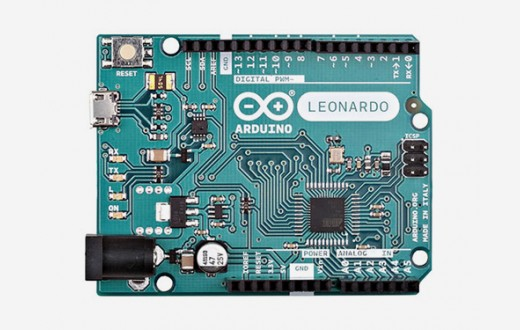
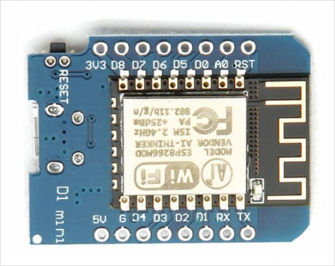

가장 대표적인 아두이노 보드 입니다.
ATmega328p 마이크로 컨트롤러를 사용합니다.
주로 교육용으로 많이 사용하며 프로젝트에는 잘 사용하지 않습니다.
적당한 개수의 디지털 포트와 아날로그 포트가 있어 여러가지 모듈들을 연결하여 테스트 해볼수 있습니다.
Uno

Digital I/O Pins : 14(PWM 포함)
PWM Digital I/O Pins : 6
Analog Input Pins : 6
Leonardo

Uno의 업그레이드 버전으로 USB 연결을 위한 통신 기능을 내장하고 있는 ATmega32U4 마이크로 컨트롤러를 사용한 모델 입니다.(Uno의 경우 USB 통신을 위한 별도의 칩이 메인프로세서가 아니라 보드에 내장되어있습니다.)
PC에 연결했을때 시리얼/COM포트 뿐만 아니라 마우스나 키보드 같은 장치로 인식 시킬수 있습니다.
PC에 연결했을때 시리얼/COM포트 뿐만 아니라 마우스나 키보드 같은 장치로 인식 시킬수 있습니다.
Digital I/O Pins : 20(PWM, Analog 포함)
PWM Digital I/O Pins : 7
Analog Input Pins : 12
Nano

Uno와 동일한 마이크로 컨트롤러를 사용하는 소형 보드 입니다.
Uno에서 핀소켓, 중복핀, 별도 전원단자 등을 생략해서 크기를 줄인 형태로 편의성은 떨어지지만 크기가 작아 다른 장치에 부착하기 편합니다.
Uno에서 핀소켓, 중복핀, 별도 전원단자 등을 생략해서 크기를 줄인 형태로 편의성은 떨어지지만 크기가 작아 다른 장치에 부착하기 편합니다.
Digital I/O Pins : 22(PWM 포함)
PWM Digital I/O Pins : 6
Analog Input Pins : 8
Micro

Leonardo와 같은 마이크로 컨트롤러를 사용하는 소형 보드 입니다.
Pin 구성이 Leonardo와 동일합니다.
크기를 더 작게 만든 Pro Micro 보드가 있습니다.
Pin 구성이 Leonardo와 동일합니다.
크기를 더 작게 만든 Pro Micro 보드가 있습니다.
Digital I/O Pins : 20(PWM, Analog 포함)
PWM Digital I/O Pins : 7
Analog Input Pins : 12
Mega 2560

Uno다음으로 보편적인 아두이노입니다.
ATmega2560 마이크로 컨트롤러를 사용하여 많은 Pin과 메모리용량이 특징입니다.
시리얼 포트를 4개를 지원하기때문에 추가적인 시리얼 통신을 하는데 편리합니다.
3D프린터를 제작하는데 많이 사용됩니다.
보드 스펙이 높은 만큼 비싼편에 속합니다.
ATmega2560 마이크로 컨트롤러를 사용하여 많은 Pin과 메모리용량이 특징입니다.
시리얼 포트를 4개를 지원하기때문에 추가적인 시리얼 통신을 하는데 편리합니다.
3D프린터를 제작하는데 많이 사용됩니다.
보드 스펙이 높은 만큼 비싼편에 속합니다.
Digital I/O Pins : 54(PWM 포함)
PWM Digital I/O Pins : 15
Analog Input Pins : 16
Due

AT9SAM3X8E 마이크로 컨트롤러를 사용하는 보드 입니다.
기존 보드들과는 다르게 32bit ARM 프로세서를 사용하는것이 특징 입니다.
성능이 매우 높지만 그만큼 비쌉니다.
기존 보드들과는 다르게 32bit ARM 프로세서를 사용하는것이 특징 입니다.
성능이 매우 높지만 그만큼 비쌉니다.
Digital I/O Pins : 54(PWM 포함)
PWM Digital I/O Pins : 12
Analog Input Pins : 12
Analog Output Pins : 2(DAC)
Uno Wifi
Wifi가 탑제되어 있는 아두이노 보드 입니다.
ATmega4809 마이크로 컨트롤러를 사용합니다.
기능적으로는 Uno와 동일하지만 Wifi를 비롯해 몇몇 기타사항들이 개선된 보드입니다.
IoT를 이용할때 주로 사용하며 기본틀은 Uno와 같기때문에 사용하는데 큰 이질감이 없습니다.
하지만 Wifi기능이 추가된 만큼 비싼편에 속합니다.
ATmega4809 마이크로 컨트롤러를 사용합니다.
기능적으로는 Uno와 동일하지만 Wifi를 비롯해 몇몇 기타사항들이 개선된 보드입니다.
IoT를 이용할때 주로 사용하며 기본틀은 Uno와 같기때문에 사용하는데 큰 이질감이 없습니다.
하지만 Wifi기능이 추가된 만큼 비싼편에 속합니다.
Digital I/O Pins : 14(PWM 포함)
PWM Digital I/O Pins : 5
Analog Input Pins : 6
Esp 8266 D1 mini

ESP8266(ESP12)칩을 사용하는 소형 보드 입니다.
오픈소스 IoT 플렛폼인 NodeMCU의 와이파이 기능이 구현된 개발보드 입니다.
D1 mini의 경우 사용하지 않는 Pin을 모두 제외하여 크기를 최소화 했습니다.
D1 mini만 사용하기에는 포트수가 부족하기 때문에 주로 다른 개발보드와 연결하여 사용하는 경우가 많습니다.
예시로 Uno 보드와 결합된 상태로 만들어지는 보드가 있습니다.
가격이 싸다는 것도 장점 입니다.
오픈소스 IoT 플렛폼인 NodeMCU의 와이파이 기능이 구현된 개발보드 입니다.
D1 mini의 경우 사용하지 않는 Pin을 모두 제외하여 크기를 최소화 했습니다.
D1 mini만 사용하기에는 포트수가 부족하기 때문에 주로 다른 개발보드와 연결하여 사용하는 경우가 많습니다.
예시로 Uno 보드와 결합된 상태로 만들어지는 보드가 있습니다.
가격이 싸다는 것도 장점 입니다.
Digital I/O Pins : 11
PWM Digital I/O Pins : 0
Analog Input Pins : 1
Esp 32
ESP8266의 후속작으로 기존 기능에 Bluetooth기능이 추가 됬고, 처리속도와 입출력 핀도 증가시킨 개발 보드 입니다.
Pin 개수가 두배 정도 증가 했으며 터치센서, 온도센서 등이 내장 되어 있기도 합니다.
ESP32기반의 다양한 보드들이 판매 되고 있어 선택의 폭이 넓습니다.
우리나라에서는 잘 알려지지 않아 사용예시를 한글로 찾아보기가 조금 힘듬니다.
Pin 개수가 두배 정도 증가 했으며 터치센서, 온도센서 등이 내장 되어 있기도 합니다.
ESP32기반의 다양한 보드들이 판매 되고 있어 선택의 폭이 넓습니다.
우리나라에서는 잘 알려지지 않아 사용예시를 한글로 찾아보기가 조금 힘듬니다.
GPIOs : 36
ADC Pins : 18
DAC Pins : 2